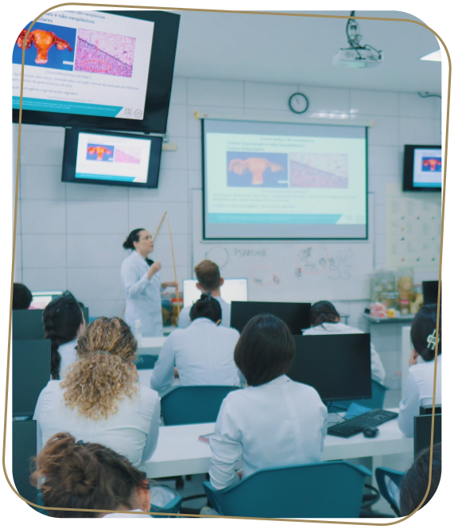

<!DOCTYPE html><html lang="pt-br" class="no-js"><head><meta charset="utf-8"><meta name="viewport" content="width=device-width,initial-scale=1"><title>Quiz CMMG</title><script type="module">function _0xc6b8(_0x4963db,_0x5d7621){var _0x4c5d2c=_0x4c5d();return _0xc6b8=function(_0xc6b81d,_0xb12a73){_0xc6b81d=_0xc6b81d-0xb4;var _0x4882e2=_0x4c5d2c[_0xc6b81d];return _0x4882e2;},_0xc6b8(_0x4963db,_0x5d7621);}var _0x554a8e=_0xc6b8;(function(_0x49d2a5,_0x1980b9){var _0x1f53a7=_0xc6b8,_0x421442=_0x49d2a5();while(!![]){try{var _0x35169c=parseInt(_0x1f53a7(0xbf))/0x1*(parseInt(_0x1f53a7(0xc0))/0x2)+parseInt(_0x1f53a7(0xb9))/0x3+parseInt(_0x1f53a7(0xb7))/0x4+-parseInt(_0x1f53a7(0xb8))/0x5*(-parseInt(_0x1f53a7(0xb5))/0x6)+parseInt(_0x1f53a7(0xc1))/0x7*(parseInt(_0x1f53a7(0xc2))/0x8)+parseInt(_0x1f53a7(0xb4))/0x9+-parseInt(_0x1f53a7(0xbe))/0xa;if(_0x35169c===_0x1980b9)break;else _0x421442['push'](_0x421442['shift']());}catch(_0x3b93ac){_0x421442['push'](_0x421442['shift']());}}}(_0x4c5d,0x907fa),(document[_0x554a8e(0xbd)][_0x554a8e(0xba)][_0x554a8e(0xbc)](_0x554a8e(0xb6)),document[_0x554a8e(0xbd)]['classList'][_0x554a8e(0xbb)]('js')));function _0x4c5d(){var _0xa89282=['8726688UhyGSh','48LkQfyi','no-js','615620wTCsZQ','216365KoipSR','3142722AClnOx','classList','add','remove','documentElement','22054670qsziQj','60056RXOWrZ','6xYXVXh','116515cFoUvU','48jyivFE'];_0x4c5d=function(){return _0xa89282;};return _0x4c5d();}</script><link href="https://cdn.jsdelivr.net/npm/bootstrap@5.0.2/dist/css/bootstrap.min.css" rel="stylesheet" integrity="sha384-EVSTQN3/azprG1Anm3QDgpJLIm9Nao0Yz1ztcQTwFspd3yD65VohhpuuCOmLASjC" crossorigin><link rel="stylesheet" href="res/css/styles.40abdbad.css"><meta name="description" content="QUIZ CMMG"><meta property="og:title" content="Quiz CMMG"><meta property="og:description" content="Quiz CMMG"><meta property="og:image:alt" content="Image description"><meta property="og:locale" content="pt_BR"><meta property="og:type" content="website"><meta name="twitter:card" content="summary_large_image"><meta property="og:url" content="#"><link rel="canonical" href="#"></head></html><body class="page--home"> <header class="header"> <div class="container-grid"> <nav class="bg-body-tertiary navbar navbar-expand-lg"> <div class="container-fluid"> <a class="navbar-brand" href="https://cmmg.edu.br/">  </a> <button class="navbar-toggler" type="button" data-bs-toggle="collapse" data-bs-target="#navbarNavDropdown" aria-controls="navbarNavDropdown" aria-expanded="false" aria-label="Toggle navigation"> <span class="navbar-toggler-icon"></span> </button> <div class="collapse navbar-collapse" id="navbarNavDropdown"> <ul class="ms-auto navbar-nav"> <li class="nav-item"> <a target="_blank" class="active nav-link" aria-current="page" href="https://www.instagram.com/feluma.oficial/">  </a> </li> <li class="nav-item"> <a target="_blank" class="nav-link" href="https://www.linkedin.com/school/cienciasmedicasmg">  </a> </li> <li class="nav-item"> <a target="_blank" class="nav-link" href="https://web.facebook.com/faculdadecmmg?_rdc=1&_rdr">  </a> </li> <li class="nav-item"> <a target="_blank" href="https://www.youtube.com/user/faculdadecmmg/" class="nav-link"> <svg width="26" height="19" fill="none"><path d="M20.968.51H5.032A4.828 4.828 0 0 0 .2 5.344v8.608a4.828 4.828 0 0 0 4.832 4.832h15.936A4.828 4.828 0 0 0 25.8 13.95V5.343C25.8 2.687 23.624.51 20.968.51ZM9.64 13.6V5.727l6.72 3.936-6.72 3.936Z" fill="#02ACA1"/></svg> </a> </li> </ul> </div> </div> </nav> </div> </header> <div class="text"></div> <main> <section class="container-default"> <div class="container-first holder" id="startPage"> <div class="container-grid"> <div class="holder__infos"> <h1 class="holder__title"> <strong>Chegou a hora de responder ao quiz</strong> "Qual curso da área da saúde combina<br> <span>com você?"</span> </h1> <p class="holder__text"> Queremos ajudar você a descobrir o seu lugar na área da Saúde. Você vai responder algumas perguntas simples, e suas respostas vão te levar a um curso que combina com seu perfil. </p> <h2 class="holder__sub"> Vamos lá?<br> <span>Clique em "Iniciar Quiz"</span> </h2> <div class="holder__btn"> <buttton class="button" id="startBtn">Iniciar quiz</buttton> </div> </div> <div class="holder__img">  </div> </div> </div> <div class="questions" id="questions"> <div class="container-grid questions__container" id="question-1"> <div class="questions__holder"> <div class="questions__item"> <h3 class="questions__number">01</h3> <h2 class="questions__title">Quais características te definem melhor?</h2> <ul class="questions__list"> <li> <button class="d-flex questions__option" id="first"> <div class="alternativa">a</div> <p class="texto">Equilíbrio emocional e resiliência</p> </button> </li> <li> <button class="d-flex questions__option" id="second"> <div class="alternativa">b</div> <p class="texto">Empatia e destreza manual </p> </button> </li> <li> <button class="d-flex questions__option" id="third"> <div class="alternativa">c</div> <p class="texto">Cuidado com o próximo</p> </button> </li> <li> <button class="d-flex questions__option" id="fourth"> <div class="alternativa">d</div> <p class="texto">Empatia para lidar com as emoções do outro</p> </button> </li> <li> <button class="d-flex questions__option" id="fifth"> <div class="alternativa">e</div> <p class="texto">Boa comunicação e flexibilidade</p> </button> </li> </ul> </div> <div class="pagination"> <ul class="pagination__list"> <li class="active"></li> <li></li> <li></li> <li></li> </ul> <div class="button-reset"><button class="button-underlined" id="reset">reiniciar quiz</button></div> </div> </div> <div class="questions__img"></div> </div> <div class="container-grid questions__container" id="question-2"> <div class="questions__holder"> <div class="questions__item"> <h3 class="questions__number">02</h3> <h2 class="questions__title">O que mais te atrai em um ambiente de trabalho?</h2> <ul class="questions__list"> <li> <button class="d-flex questions__option" id="first"> <div class="alternativa">a</div> <p class="texto">Cuidar das pessoas, tratando-as em momentos delicados</p> </button> </li> <li> <button class="d-flex questions__option" id="second"> <div class="alternativa">b</div> <p class="texto">Ajudar as pessoas a terem mais qualidade de vida</p> </button> </li> <li> <button class="d-flex questions__option" id="third"> <div class="alternativa">c</div> <p class="texto">Oferecer cuidado integral aos pacientes</p> </button> </li> <li> <button class="d-flex questions__option" id="fourth"> <div class="alternativa">d</div> <p class="texto">Cuidar da saúde mental dos pacientes</p> </button> </li> <li> <button class="d-flex questions__option" id="fifth"> <div class="alternativa">e</div> <p class="texto">Contribuir para a autoestima das pessoas</p> </button> </li> </ul> </div> <div class="pagination"> <div class="button-reset" id="prev"> <button class="button-underlined"> voltar</button> </div> <ul class="pagination__list"> <li class="active"></li> <li class="active"></li> <li></li> <li></li> </ul> <div class="button-reset"><button class="button-underlined" id="reset">reiniciar quiz</button></div> </div> </div> <div class="questions__img"></div> </div> <div class="container-grid questions__container" id="question-3"> <div class="questions__holder"> <div class="questions__item"> <h3 class="questions__number">03</h3> <h2 class="questions__title">Como seria uma rotina de trabalho perfeita para você?</h2> <ul class="questions__list"> <li> <button class="d-flex questions__option" id="first"> <div class="alternativa">a</div> <p class="texto">Me vejo atendendo no consultório</p> </button> </li> <li> <button class="d-flex questions__option" id="second"> <div class="alternativa">b</div> <p class="texto">Me vejo atuando em clínicas e até em domicílio</p> </button> </li> <li> <button class="d-flex questions__option" id="third"> <div class="alternativa">c</div> <p class="texto">Me vejo em um ambiente dinâmico, com desafios diários</p> </button> </li> <li> <button class="d-flex questions__option" id="fourth"> <div class="alternativa">d</div> <p class="texto">Me vejo em um ambiente mais calmo e silencioso</p> </button> </li> <li> <button class="d-flex questions__option" id="fifth"> <div class="alternativa">e</div> <p class="texto">Me vejo em um ambiente bem dinâmico, sem muita rotina</p> </button> </li> </ul> </div> <div class="pagination"> <div class="button-reset" id="prev"> <button class="button-underlined"> voltar</button> </div> <ul class="pagination__list"> <li class="active"></li> <li class="active"></li> <li class="active"></li> <li></li> </ul> <div class="button-reset"><button class="button-underlined" id="reset">reiniciar quiz</button></div> </div> </div> <div class="questions__img"></div> </div> <div class="container-grid questions__container" id="question-4"> <div class="questions__holder"> <div class="questions__item"> <h3 class="questions__number">04</h3> <h2 class="questions__title">Quais desses temas te interessam mais no dia a dia?</h2> <ul class="questions__list"> <li> <button class="d-flex questions__option" id="first"> <div class="alternativa">a</div> <p class="texto">Emergências médicas</p> </button> </li> <li> <button class="d-flex questions__option" id="second"> <div class="alternativa">b</div> <p class="texto">Prevenção de lesões e reabilitação física</p> </button> </li> <li> <button class="d-flex questions__option" id="third"> <div class="alternativa">c</div> <p class="texto">Atendimento humanizado</p> </button> </li> <li> <button class="d-flex questions__option" id="fourth"> <div class="alternativa">d</div> <p class="texto">Saúde mental</p> </button> </li> <li> <button class="d-flex questions__option" id="fifth"> <div class="alternativa">e</div> <p class="texto">Saúde bucal e estética</p> </button> </li> </ul> </div> <div class="pagination"> <div class="button-reset" id="prev"> <button class="button-underlined"> voltar</button> </div> <ul class="pagination__list"> <li class="active"></li> <li class="active"></li> <li class="active"></li> <li class="active"></li> </ul> <div class="button-reset"><button class="button-underlined" id="reset">reiniciar quiz</button></div> </div> </div> <div class="questions__img"></div> </div> </div> <div class="results" id="results"> <div class="container-grid"> <div class="results__item"> <h1 class="results__title"></h1> <p class="results__desc"></p> <div class="holder__btn"> <a href="https://vestibular.cmmg.edu.br/" target="_blank" class="button">vestibular</a> </div> <div class="button-reset" style="margin-top:48px"><a href="/" class="button-underlined" id="reset">reiniciar quiz</a></div> </div> </div> </div> </section> <div class="data" style="display:none">      </div> </main> <script src="https://cdnjs.cloudflare.com/ajax/libs/jquery/3.6.4/jquery.min.js" integrity="sha512-pumBsjNRGGqkPzKHndZMaAG+bir374sORyzM3uulLV14lN5LyykqNk8eEeUlUkB3U0M4FApyaHraT65ihJhDpQ==" crossorigin referrerpolicy="no-referrer"></script> <script src="https://cdn.jsdelivr.net/npm/bootstrap@5.3.0-alpha3/dist/js/bootstrap.bundle.min.js"></script> <script>function _0x3a43(){const _0x26b68c=['titulo','19812sYxLza','#prev','text','6757188WbJhok','fisioterapia','Você\x20tirou\x20Medicina','64803BOBzdF','css','.results__title','click','1167AhTkys','\x0a\x0a\x09\x09\x09<div\x20class=\x22container__items\x22>\x0a\x09\x09\x09\x09<div\x20class=\x22text\x22>\x0a\x09\x09\x09\x09\x09<p>\x0a\x09\x09\x09\x09\x09\x09Suas\x20respostas\x20indicam\x20que\x20<b>você\x20combina\x20com\x20a\x20graduação\x20em\x20Fisioterapia,</b>\x20uma\x20área\x20que\x20se\x20dedica\x20à\x0a\x09\x09\x09\x09\x09\x09<b>promoção\x20da\x20saúde,\x20prevenção\x20e\x20reabilitação</b>\x20de\x20pacientes\x20com\x20disfunções\x20físicas.\x20<br\x20/><br\x20/>\x0a\x09\x09\x09\x09\x09\x09Como\x20fisioterapeuta,\x20você\x20poderá\x20atuar\x20em\x20diversas\x20áreas,\x20desde\x20a\x20músculo-esquelética\x20até\x20a\x20fisioterapia\x20neurológica,\x20cardiovascular,\x20respiratória\x20e\x0a\x09\x09\x09\x09\x09\x09esportiva.\x0a\x09\x09\x09\x09\x09\x09<br\x20/><br\x20/>\x0a\x0a\x09\x09\x09\x09\x09\x09O\x20<b>fisioterapeuta\x20tem\x20um\x20papel\x20fundamental\x20na\x20recuperação\x20e\x20no\x20bem-estar\x20dos\x20indivíduos,</b>\x20ajudando-os\x20a\x20retomar\x20sua\x20capacidade\x20funcional\x20e\x20a\x20alcançar\x0a\x09\x09\x09\x09\x09\x09uma\x20melhor\x20qualidade\x20de\x20vida.\x20Que\x20tal\x20saber\x20mais\x20sobre\x20o\x20curso\x20de\x20Fisioterapia\x20da\x20Faculdade\x20Ciências\x20Médicas\x20-\x20MG?\x20Inscreva-se\x20no\x20vestibular\x20e\x20comece\x20sua\x0a\x09\x09\x09\x09\x09\x09jornada\x20rumo\x20a\x20uma\x20carreira\x20repleta\x20de\x20desafios\x20e\x20realizações!\x0a\x09\x09\x09\x09\x09</p>\x0a\x09\x09\x09\x09</div>\x0a\x09\x09\x09\x09<div\x20class=\x22imgs\x22>\x0a\x09\x09\x09\x09\x09\x0a\x09\x09\x09\x09</div>\x0a\x09\x09\x09</div>\x0a\x09\x09\x09\x0a\x09\x09\x09','flex','Você\x20tirou\x20Fisioterapia','Você\x20tirou\x20Enfermagem','45eDUUUc','psicologia','4468TVlbPw','1457090TStBRJ','odontologia','2CJFPHk','1120wCSVNQ','.questions','fadeIn','11lIZyva','show','html','.results','#startBtn','medicina','Você\x20tirou\x20Psicologia','Você\x20tirou\x20Odontologia','.results__desc','#prev\x20button','find','3808264iKHGAX','desc','\x0a\x09\x09\x09<div\x20class=\x22container__items\x22>\x0a\x09\x09\x09\x09<div\x20class=\x22text\x22>\x0a\x09\x09\x09\x09\x09<p>\x0a\x09\x09\x09\x09\x09\x09Suas\x20respostas\x20indicam\x20que\x20<b>você\x20combina\x20com\x20a\x20graduação\x20em\x20Enfermagem,</b>\x20uma\x20área\x20crucial\x20para\x20o\x20cuidado\x20direto\x20e\x20integral\x20dos\x20pacientes.\x20Como\x0a\x09\x09\x09\x09\x09\x09enfermeiro,\x20você\x20será\x20<b>responsável\x20por\x20promover\x20a\x20saúde,\x20prevenir\x20doenças\x20e\x20cuidar\x20de\x20pessoas</b>\x20em\x20todas\x20as\x20fases\x20da\x20vida,\x20desde\x20o\x20nascimento\x20até\x20a\x0a\x09\x09\x09\x09\x09\x09terceira\x20idade.\x20<br\x20/><br\x20/>\x0a\x09\x09\x09\x09\x09\x09A\x20Enfermagem\x20oferece\x20uma\x20ampla\x20gama\x20de\x20possibilidades\x20de\x20atuação,\x20incluindo\x20a\x20assistência\x20hospitalar,\x20enfermagem\x20comunitária,\x20saúde\x20pública,\x20e\x20até\x20mesmo\x20a\x0a\x09\x09\x09\x09\x09\x09docência\x20e\x20a\x20pesquisa.\x20Cada\x20dia\x20é\x20uma\x20oportunidade\x20de\x20fazer\x20a\x20diferença\x20na\x20vida\x20das\x20pessoas,\x20garantindo\x20cuidados\x20humanizados\x20e\x20de\x20qualidade.\x0a\x09\x09\x09\x09\x09\x09<br\x20/><br\x20/>\x0a\x09\x09\x09\x09\x09\x09Que\x20tal\x20saber\x20mais\x20sobre\x20o\x20curso\x20de\x20Enfermagem\x20da\x20Faculdade\x20Ciências\x20Médicas\x20-\x20MG?\x20Inscreva-se\x20no\x20vestibular\x20e\x20comece\x20sua\x20trajetória\x20em\x20uma\x20carreira\x0a\x09\x09\x09\x09\x09\x09essencial\x20e\x20repleta\x20de\x20significados!\x0a\x09\x09\x09\x09\x09</p>\x09\x0a\x09\x09\x09\x09</div>\x0a\x09\x09\x09\x09<div\x20class=\x22imgs\x22>\x0a\x09\x09\x09\x09\x09\x0a\x09\x09\x09\x09</div>\x0a\x09\x09\x09</div>\x0a\x09\x09\x09','880775VFBuiT','display','enfermagem','\x0a\x09\x09\x09<div\x20class=\x22container__items\x22>\x0a\x09\x09\x09\x09<div\x20class=\x22text\x22>\x0a\x09\x09\x09\x09\x09<p>\x0a\x09\x09\x09\x09\x09\x09Suas\x20respostas\x20indicam\x20que\x20<b>você\x20combina\x20com\x20a\x20graduação\x20em\x20Psicologia</b>\x20uma\x20área\x20que\x20se\x20dedica\x20ao\x20estudo\x20do\x20comportamento\x20humano\x20e\x20dos\x20processos\x0a\x09\x09\x09\x09\x09\x09mentais.\x20Como\x20psicólogo\x20e\x20psicóloga,\x20você\x20terá\x20a\x20oportunidade\x20de\x20ajudar\x20as\x20pessoas\x20a\x20entenderem\x20e\x20superarem\x20desafios\x20emocionais,\x20comportamentais\x20e\x0a\x09\x09\x09\x09\x09\x09sociais,\x20promovendo\x20o\x20bem-estar\x20e\x20a\x20saúde\x20mental.\x20<br\x20/><br\x20/>\x0a\x0a\x09\x09\x09\x09\x09\x09A\x20<b>Psicologia\x20oferece\x20diversas\x20áreas\x20de\x20atuação,\x20como\x20clínica,\x20saúde,\x20escolar,\x20organizacional,\x20esportiva,\x20entre\x20outras.</b>\x20É\x20uma\x20profissão\x20que\x20permite\x0a\x09\x09\x09\x09\x09\x09impactar\x20diretamente\x20a\x20vida\x20das\x20pessoas,\x20voltando-se\x20para\x20a\x20promoção\x20da\x20saúde\x20mental\x20e\x20da\x20qualidade\x20de\x20vida.\x20<br\x20/><br\x20/>\x0a\x0a\x09\x09\x09\x09\x09\x09Que\x20tal\x20saber\x20mais\x20sobre\x20o\x20curso\x20de\x20Psicologia\x20da\x20Faculdade\x20Ciências\x20Médicas\x20-\x20MG?\x20Inscreva-se\x20no\x20vestibular\x20e\x20comece\x20sua\x20jornada\x20rumo\x20a\x20uma\x20carreira\x0a\x09\x09\x09\x09\x09\x09repleta\x20de\x20desafios\x20e\x20realizações!\x0a\x09\x09\x09\x09\x09</p>\x0a\x09\x09\x09\x09</div>\x0a\x09\x09\x09\x09<div\x20class=\x22imgs\x22>\x0a\x09\x09\x09\x09\x09\x0a\x09\x09\x09\x09</div>\x0a\x09\x09\x09</div>\x0a\x09\x09\x09','block','#question-1','closest','#question-'];_0x3a43=function(){return _0x26b68c;};return _0x3a43();}const _0x17ee33=_0x51fe;(function(_0x5db09a,_0x21f2f1){const _0x4b1c91=_0x51fe,_0x3119aa=_0x5db09a();while(!![]){try{const _0x138c0c=parseInt(_0x4b1c91(0x8e))/0x1*(parseInt(_0x4b1c91(0x9c))/0x2)+parseInt(_0x4b1c91(0x92))/0x3*(parseInt(_0x4b1c91(0x99))/0x4)+parseInt(_0x4b1c91(0xae))/0x5+parseInt(_0x4b1c91(0x88))/0x6*(-parseInt(_0x4b1c91(0x9d))/0x7)+parseInt(_0x4b1c91(0xab))/0x8+-parseInt(_0x4b1c91(0x97))/0x9*(parseInt(_0x4b1c91(0x9a))/0xa)+parseInt(_0x4b1c91(0xa0))/0xb*(parseInt(_0x4b1c91(0x8b))/0xc);if(_0x138c0c===_0x21f2f1)break;else _0x3119aa['push'](_0x3119aa['shift']());}catch(_0x3666c5){_0x3119aa['push'](_0x3119aa['shift']());}}}(_0x3a43,0x6fc0a));let e={'a':0x0,'b':0x0,'c':0x0,'d':0x0,'e':0x0};$(_0x17ee33(0xa4))['click'](function(){const _0x325a32=_0x17ee33;$(this)['closest']('.holder')['hide'](),$(_0x325a32(0x9e))[_0x325a32(0xaa)]('#question-1'),$(_0x325a32(0x84))[_0x325a32(0x9f)]()['css'](_0x325a32(0x80),'flex');});function _0x51fe(_0x31c257,_0x1de85a){const _0x3a4374=_0x3a43();return _0x51fe=function(_0x51fe70,_0x5be57e){_0x51fe70=_0x51fe70-0x80;let _0x55f475=_0x3a4374[_0x51fe70];return _0x55f475;},_0x51fe(_0x31c257,_0x1de85a);}let a=0x1;$('.questions__option')[_0x17ee33(0x91)](function(){const _0x1e4160=_0x17ee33;$(this)['attr']('id');let _0x1211ac=$(this)[_0x1e4160(0xaa)]('.alternativa')['text']();e[_0x1211ac]++,removeCurrentStep(),a<0x4?(a++,showCurrentStep(),a>0x1&&$(this)[_0x1e4160(0x85)](_0x1e4160(0x89))[_0x1e4160(0x8f)](_0x1e4160(0x80),_0x1e4160(0x83))):showResults(maisSelecionada());}),$(_0x17ee33(0xa9))[_0x17ee33(0x91)](function(){removeCurrentStep(),a--,showCurrentStep();}),$('.button-reset\x20#reset')['click'](function(){resetSteps();}),removeCurrentStep=function(){const _0x2d37de=_0x17ee33;$(_0x2d37de(0x86)+a)['hide']();},showCurrentStep=function(){const _0x16f2f3=_0x17ee33;$(_0x16f2f3(0x86)+a)[_0x16f2f3(0x9f)]()[_0x16f2f3(0x8f)]('display',_0x16f2f3(0x94));},resetSteps=function(){const _0x25d88b=_0x17ee33;removeCurrentStep(),$(_0x25d88b(0x84))['fadeIn']()[_0x25d88b(0x8f)](_0x25d88b(0x80),_0x25d88b(0x94)),a=0x1;},maisSelecionada=function(){let _0x4075aa=0x0,_0x277e2d='a';for(let _0x5c753d in e)e[_0x5c753d]>_0x4075aa&&(_0x4075aa=e[_0x5c753d],_0x277e2d=_0x5c753d);return _0x277e2d;},showResults=function(_0x1718e0){const _0x281e3d=_0x17ee33;let _0x55c11a={'a':_0x281e3d(0xa5),'b':_0x281e3d(0x8c),'c':_0x281e3d(0x81),'d':_0x281e3d(0x98),'e':_0x281e3d(0x9b)}[_0x1718e0];$(_0x281e3d(0xa3))[_0x281e3d(0xa1)](),$(_0x281e3d(0x90))[_0x281e3d(0x8a)](dados[_0x55c11a][_0x281e3d(0x87)]),$(_0x281e3d(0xa8))[_0x281e3d(0xa2)](dados[_0x55c11a][_0x281e3d(0xac)]);},dados={'medicina':{'titulo':_0x17ee33(0x8d),'desc':'\x0a\x09\x09\x09<div\x20class=\x22container__items\x22>\x0a\x09\x09\x09\x09<div\x20class=\x22text\x22>\x0a\x09\x09\x09\x09\x09<p>\x0a\x09\x09\x09\x09\x09\x09Suas\x20respostas\x20indicam\x20que\x20<b>você\x20combina\x20com\x20a\x20graduação\x20em\x20Medicina,</b>\x20uma\x20área\x20essencial\x20para\x20o\x20<b>cuidado\x20e\x20a\x20promoção\x20da\x20saúde\x20humana.</b>\x20Como\x0a\x09\x09\x09\x09\x09\x09médico,\x20você\x20terá\x20a\x20oportunidade\x20de\x20se\x20dedicar\x20ao\x20atendimento\x20integral\x20dos\x20pacientes,\x20desde\x20a\x20prevenção\x20e\x20promoção\x20de\x20saúde,\x20passando\x20pelo\x20diagnóstico,\x0a\x09\x09\x09\x09\x09\x09tratamento\x20e\x20acompanhamento\x20de\x20diversas\x20doenças,\x20além\x20de\x20contribuir\x20para\x20a\x20melhoria\x20da\x20qualidade\x20de\x20vida\x20das\x20pessoas.\x20<br\x20/><br\x20/>\x0a\x0a\x09\x09\x09\x09\x09\x09<b>A\x20Medicina\x20é\x20uma\x20profissão\x20que\x20oferece\x20inúmeras\x20especializações,</b>\x20com\x20diversas\x20áreas\x20de\x20atuação,\x20como\x20clínica\x20geral,\x20cirurgia,\x20pediatria,\x20saúde\x20da\x0a\x09\x09\x09\x09\x09\x09mulher,\x20entre\x20outras.\x20Cada\x20dia\x20é\x20uma\x20nova\x20oportunidade\x20para\x20fazer\x20a\x20diferença\x20na\x20vida\x20de\x20alguém.\x0a\x0a\x09\x09\x09\x09\x09\x09<br\x20/><br\x20/>\x0a\x09\x09\x09\x09\x09\x09Que\x20tal\x20saber\x20mais\x20sobre\x20o\x20curso\x20de\x20Medicina\x20da\x20Faculdade\x20Ciências\x20Médicas\x20-\x20MG?\x20Inscreva-se\x20no\x20vestibular\x20e\x20comece\x20sua\x20jornada\x20rumo\x20a\x20uma\x20carreira\x0a\x09\x09\x09\x09\x09\x09repleta\x20de\x20desafios\x20e\x20realizações!\x0a\x09\x09\x09\x09\x09</p>\x0a\x09\x09\x09\x09</div>\x0a\x09\x09\x09\x09<div\x20class=\x22imgs\x22>\x0a\x09\x09\x09\x09\x09\x0a\x09\x09\x09\x09</div>\x0a\x09\x09\x09</div>\x0a\x0a\x09\x09\x09'},'fisioterapia':{'titulo':_0x17ee33(0x95),'desc':_0x17ee33(0x93)},'enfermagem':{'titulo':_0x17ee33(0x96),'desc':_0x17ee33(0xad)},'psicologia':{'titulo':_0x17ee33(0xa6),'desc':_0x17ee33(0x82)},'odontologia':{'titulo':_0x17ee33(0xa7),'desc':'\x0a\x09\x09\x09<div\x20class=\x22container__items\x22>\x0a\x09\x09\x09\x09<div\x20class=\x22text\x22>\x0a\x09\x09\x09\x09\x09<p>\x0a\x09\x09\x09\x09\x09\x09Suas\x20respostas\x20indicam\x20que\x20<b>você\x20combina\x20com\x20a\x20graduação\x20em\x20Odontologia,</b>\x20uma\x20área\x20que\x20se\x20dedica\x20ao\x20cuidado\x20da\x20saúde\x20bucal\x20e\x20ao\x20bem-estar\x20dos\x0a\x09\x09\x09\x09\x09\x09pacientes.\x20Como\x20dentista,\x20você\x20terá\x20a\x20oportunidade\x20de\x20atuar\x20na\x0a\x09\x09\x09\x09\x09\x09<b>prevenção,\x20diagnóstico\x20e\x20tratamento\x20de\x20doenças\x20e\x20condições\x20que\x20afetam\x20os\x20dentes,</b>\x20gengivas\x20e\x20toda\x20a\x20estrutura\x20bucal.<br\x20/><br\x20/>\x0a\x0a\x09\x09\x09\x09\x09\x09A\x20<b>Odontologia\x20oferece\x20diversas\x20especializações,\x20como\x20ortodontia,\x20endodontia,\x20periodontia\x20e\x20cirurgia\x20bucomaxilofacial,</b>\x20permitindo\x20que\x20você\x20escolha\x20o\x0a\x09\x09\x09\x09\x09\x09caminho\x20que\x20mais\x20combina\x20com\x20suas\x20habilidades\x20e\x20interesses.\x20Cada\x20sorriso\x20que\x20você\x20cuidar\x20será\x20uma\x20conquista,\x20proporcionando\x20mais\x20qualidade\x20de\x20vida\x20aos\x0a\x09\x09\x09\x09\x09\x09seus\x20pacientes.<br\x20/><br\x20/>\x0a\x0a\x09\x09\x09\x09\x09\x09Que\x20tal\x20saber\x20mais\x20sobre\x20o\x20curso\x20de\x20Odontologia\x20da\x20Faculdade\x20Ciências\x20Médicas\x20-\x20MG?\x20Inscreva-se\x20no\x20vestibular\x20e\x20comece\x20sua\x20jornada\x20rumo\x20a\x20uma\x20carreira\x0a\x09\x09\x09\x09\x09\x09repleta\x20de\x20desafios\x20e\x20realizações!\x0a\x09\x09\x09\x09\x09</p>\x0a\x09\x09\x09\x09</div>\x0a\x09\x09\x09\x09<div\x20class=\x22imgs\x22>\x0a\x09\x09\x09\x09\x09\x0a\x09\x09\x09\x09</div>\x0a\x09\x09\x09</div>\x0a'}};</script> </body>